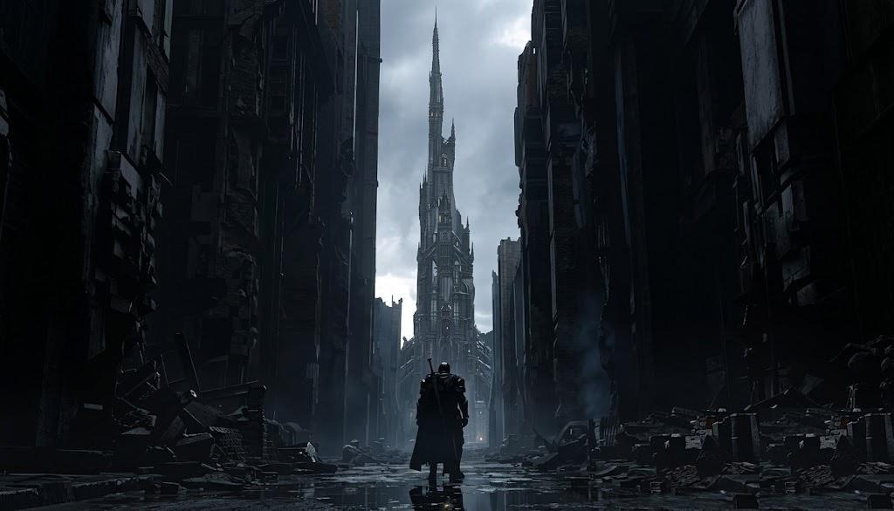
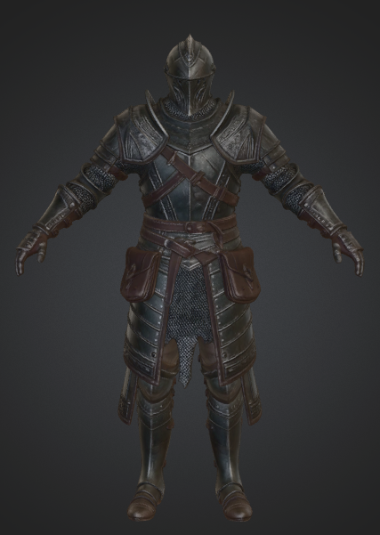
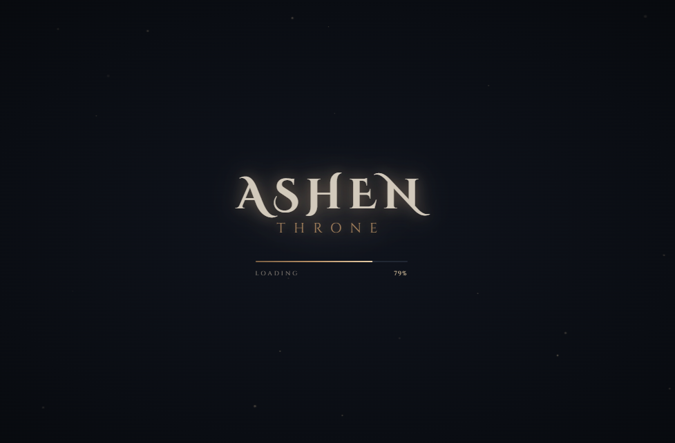

컨셉 트레일러 제작
게임의 분위기와 톤앤매너를 확립하기 위한 첫 비디오 작업. 폐허 도시의 장엄한 분위기와 기사의 실루엣을 시각화.
CONCEPT
GRADUATION PROJECT 2026 · DEVELOPMENT EXHIBITION

잿빛 옥좌 — 소울라이크 1:1 보스전 개발 기록전
PROLOGUE
몰락한 왕국의 폐허, 그 중심에 남은 단 하나의 존재.
ASHEN THRONE은 정통 소울라이크 스타일의 1:1 보스 결투를 핵심으로 한 3D 다크 판타지 액션 게임입니다.
세계관과 브랜드를 담은 공식 웹사이트를 먼저 디자인하고, 그 비주얼 아이덴티티를 Unity 인게임(타이틀·로딩·HUD)으로 1:1 정밀 이식했습니다. 그리고 그 위에 스태미나 기반 공방, 8방향 락온 스트레이프, 12패턴 지능형 보스 AI를 쌓아 올리고 있습니다.

THE WANDERER — 3D 플레이어 캐릭터 컨셉 아트
TIMELINE
게임의 분위기와 톤앤매너를 확립하기 위한 첫 비디오 작업. 폐허 도시의 장엄한 분위기와 기사의 실루엣을 시각화.
CONCEPT프리로더 · 히어로 · 세계관 · 캐릭터 · 게임플레이 · 미디어 · 크레딧으로 구성된 단일 페이지 웹사이트 구축. 디자인 시스템 확립.
WEB DESIGNHDRP 세팅, 플레이어(이동/락온), 보스 AI(12패턴 FSM), 전투(히트박스/스태미나/체력) 시스템 및 아레나 자동 생성 툴 완성.
SYSTEMDoubleL 대검 모션 바인딩, 8방향 락온 스트레이프, 지면 밀착 구르기, 슈퍼아머 적용, 캐릭터 몸/팔 꼬임 버그 4대 원인 원천 차단.
ANIMATION웹사이트의 비주얼 토큰을 그대로 계승한 타이틀 · 로딩 시스템(IMGUI 100% 절차적 렌더링)과 다크 판타지 인게임 HUD 완성.
UI / UXHALL OF IDENTITY
THE KINGDOM HAS FALLEN.
ENTER THE RUINS. FACE WHAT REMAINS.
게임보다 먼저 세계관의 얼굴을 만들었습니다. 웹사이트에서 정립한 색과 서체, 여백과 장식은 이후 유니티 인게임 UI 전체의 설계 표준이 되었습니다.
#0b0e14#1a1f2c#785d42#b89065#e4cca6#ded6cb#8f2828#a4b6c8FROM WEB TO ENGINE
공식 웹사이트의 #hero와 #preloader를 Unity 엔진에 1:1 정밀 이식.
단 1장의 외부 스프라이트 없이 100% C# 절차적 코드(IMGUI)로 고해상도 UI 텍스처와 파티클을 렌더링합니다.

마우스가 버튼을 벗어났을 때 호버 효과가 영구 고정되던 문제를 해결. 마우스 이탈 시 0.3초 동안 부드럽게 기본 상태로 복귀하며 키보드/패드 네비게이션과 지능적으로 분리.
HasPlayedIntroThisSession 정적 세션 플래그, isAlreadyInTarget 씬 중복 검사, 더블클릭 방지 가드를 구축하여 씬 전환 시 로딩이 2회 연쇄 실행되는 현상을 3중 방어.
자극적인 화면 플래시, 스파크 점멸, 텍스트 깜빡임을 완전히 배제. 정통 소울라이크의 무거운 톤앤매너에 맞추어 부드러운 딥 블랙 암전 페이드(Dark Fade)로만 화면 전환을 처리.
HALL OF THE WANDERER
마우스+키보드 / 키보드 단독(Dual-Key) / 게임패드 3종 입력을 완벽하게 동기화 지원.
자유 이동은 Type A 대검 모션(Idle, Walk, Run, Sprint)으로 매끄럽게 연결하고, 락온 시에는 Type B 8방향 모션으로 전환하여 다크소울 특유의 시선 고정 후진 무빙을 완성.
높이 오프셋 커브 _dodgeHeightOffset을 신설하여 0m에서 -0.22m까지 바닥에 바짝 밀착되어 회전하도록 교정. 리타게팅 시 공중으로 솟구치는 현상을 원천 방지.
공격 중 보스에게 맞아도 피격 애니메이션(Hit)에 의해 칼질이 끊기지 않는 슈퍼아머 적용. 호쾌한 콤보 연계와 리듬감 있는 공방을 보장.
HALL OF THE ABYSS
HP 2,000 · 그로기 포이즈 120 · 12가지 지능형 패턴을 갖춘 유한 상태 머신(FSM).
체력 감소에 따라 단계별로 위협적인 연계 패턴과 광폭화가 해금됩니다. 각 패턴 카드를 클릭하여 상세 명세를 확인하세요.
모든 패턴은 선딜 · 공격 판정 · 후딜 · 패링 가능 여부가 데이터(BossPatternData.cs)로 규격화되어 공정한 공방을 제공합니다.
HALL OF INTERFACE
체력 비율에 따라 골드 프레임 속 내부 다이아몬드 코어가 황금빛에서 검붉은 혈색으로 서서히 물들며 플레이어의 생명력을 직관적으로 전달.
피격 시 깎인 체력이 골드 앰버 잔상으로 남아있다가 천천히 뒤따라 줄어드는 정통 소울라이크 연출. 맞은 피해량을 체감 가능.
스태미나 바 20% 지점에 미니멀 골드 핀을 배치하여, 스태미나가 완전히 고갈되었을 때 언제 다시 공격/회피가 가능한지 명확히 인지.
보스 바 중앙 50%에 각성 지점을 상시 표시. 2페이즈 돌입 시 게이지가 이글거리는 불씨색(Ember)으로 변하고 ENRAGED 엠블럼 점등.
연속 공격 적중 시 실시간으로 총 데미지가 카운트되며, 2.4초간 공격이 멈추면 부드럽게 페이드아웃되어 플레이어의 타격 만족감 증대.
코너 브래킷과 골드 헤어라인으로 둘러싸인 미니멀 가이드. 전투 몰입을 방해하지 않도록 F1 키로 언제든 켜고 끌 수 있게 설계.
HALL OF TRIALS
다운로드한 DoubleL RPG Animations 대검 모션을 자체 제작 3D 모델에 적용하자, 걷거나 달릴 때마다 왼팔이 뒤틀리고 몸통이 좌우로 이중 비틀림 발생.
LateUpdate()에 있던 왼팔 강제 회전 코드가 매 프레임 애니메이션을 덮어씀HandleMovement()에서 visualRoot에 적용되던 Z축 틸트가 몸체 왜곡 유발OutdoorsScene.unity 내 팔 본들의 로컬 회전값이 비틀린 채 저장됨강제 회전 코드 완전 삭제 · Z축 뱅킹 제거 · 전방 모션을 DoubleL 공식 Type A InPlace로 전면 통일 · 씬 내 본 회전값을 원본 Rest Pose로 복원하고, PlayerSetupUtility.cs에 Rest Pose 자동 복원 로직을 탑재하여 재발을 영구 방지.
문제점: 공격 도중 보스에게 맞으면 AnyState의 Hit 트리거가 발동하여 시전 중이던 칼질이 취소되고 경직되어 전투 리듬 붕괴.
해결책: PlayerController.cs에 enableHitAnimation=false 슈퍼아머를 신설하고 Hit 전이를 Mute 처리하여 호쾌한 공방 완성.
문제점: 휴머노이드 리타게팅 과정에서 엉덩이(Hips) 본이 튀어올라 공중으로 부양하는 느낌 발생.
해결책: _dodgeHeightOffset 높이 커브(0%~25%: 0→-0.22m 낮추기, 25%~68%: 바닥 밀착, 이후 복귀) 및 Hips 상한 억제로 묵직한 구르기 달성.
문제점: 타이틀 씬에서 전투 씬으로 전환될 때 새 씬의 스크립트가 로딩을 또다시 실행하여 2회 반복됨.
해결책: HasPlayedIntroThisSession 세션 플래그 + 동일 씬 체크 + 더블클릭 가드의 3중 파이프라인으로 단 1회 로딩만 100% 보장.
SYSTEM BLUEPRINT
CURRENT PROGRESS
EPILOGUE
"The city breathes no more.
Yet something ancient still watches from the spire."
경청해 주셔서 감사합니다
설명이 들어갑니다.
공격 도중 보스의 공격을 받아도 시전 중이던 대검 공격 모션과 히트박스가 취소되지 않고 끝까지 완성되도록 enableHitAnimation=false 슈퍼아머 메커니즘을 신설했습니다. 전투의 손맛과 콤보 연계가 비약적으로 상승했습니다.
과거 방패 시절 잔존한 LateUpdate() 강제 회전 코드 삭제, visualRoot Z축 뱅킹 제거, Locomotion_Free_Blend Type A 통일, 씬 내 비틀린 본 회전값의 Rest Pose 복구 및 PlayerSetupUtility 영구 방지 자동 로더 구축을 완료했습니다.
도약 구간에서 몸을 웅크리며 높이를 0m에서 -0.22m로 낮추는 _dodgeHeightOffset 커브를 적용하여 공중으로 붕 뜨는 느낌을 없애고 묵직한 소울라이크 구르기를 구현했습니다.
웹사이트의 앤티크 골드 감성을 유니티 IMGUI 코드로 100% 이식하고, 지연 감소 체력 트레일, 20% 스태미나 탈진 틱 마크, 로딩 2회 반복 버그 3중 방어 파이프라인을 완성했습니다.